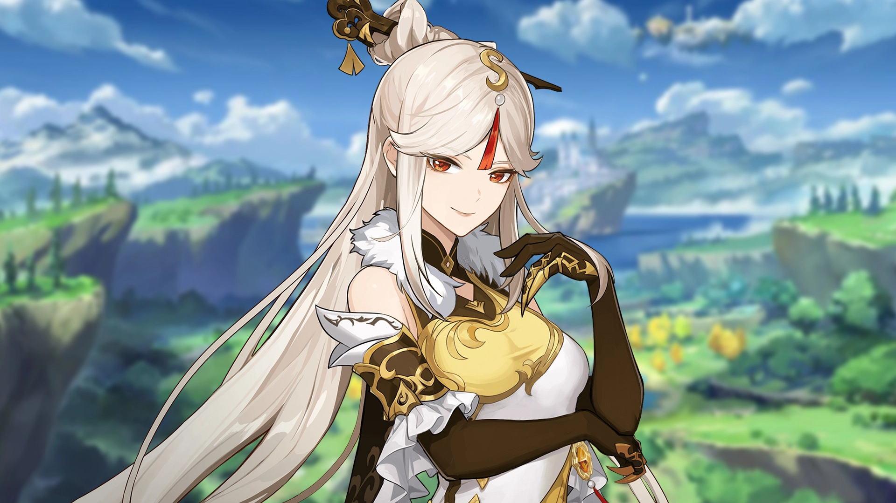
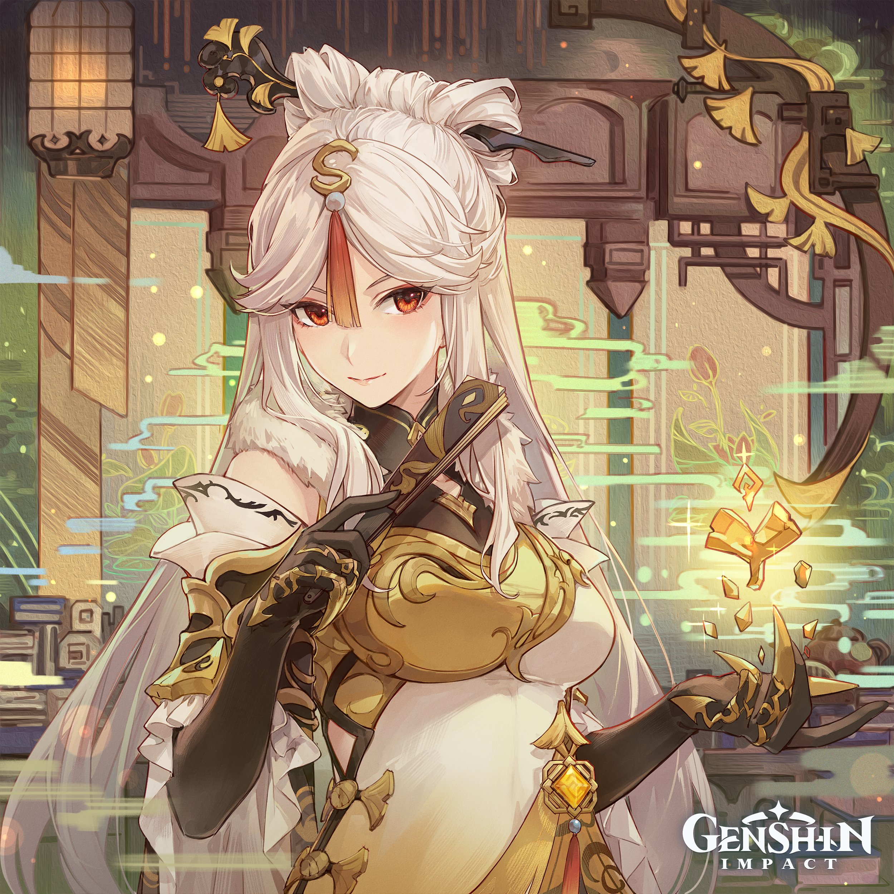
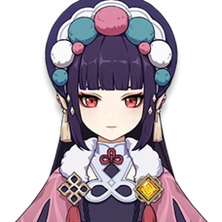
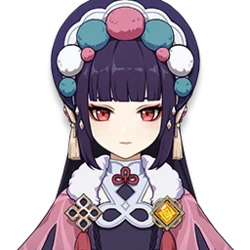

Ningguang Guide
Ningguang is a Geo Catalyst Character that specializes as a Burst DPS or Support.
Overview
Ningguang is popular she can fit spectactularly into her roles. She excells at both being a Burst DPS and Support with very little investment. She is a great character for new players, and skilled players can use new techniques to make her even better.

Elemental Skill: Jade Screen
Ningguang creates a Jade Screen out of gold, obsidian and her great opulence, dealing AoE Geo DMG. This screen blocks opponents' projectiles. Endurance scales based on Ningguang's Max HP.
This is the only AOE skill Ningguang has barring the tiny AOE on her CA and C1. After you unlock Ningguang’s A4 Talent, crossing the screen will grant you a 12% Geo Bonus for 10s. As such, always cross the screen after you summon it, and especially before you use your Elemental Burst.
Elemental Burst: Starshatter
Gathering a great number of gems, Ningguang scatters them all at once, sending homing projectiles at her opponents that deal massive Geo DMG.
If you use Starshatter when a Jade Screen is on the field, summon another six gems. Basically, Starshatter’s multipliers will DOUBLE if a Jade Screen is present. Make sure you have a Jade Screen when you use Starshatter.
Constellations
C1: Piercing Fragments
This doesn’t make Ningguang into an amazing AOE dps since we only NA to gain Star Jade. However, this is amazing for mining.
C2: Shock Effect
C2 will refresh Ningguang’s Elemental Skill if it’s broken (either by Starshatter, by hitbox collision, or by recasting Jade Screen), on a 6s internal cooldown. C2 is the MOST important constellation for Ningguang: it gives Ningguang more damage, more energy, and most importantly, it means you can have 100% uptime on your A4 Talent (you’ll only have 83% uptime if you’re under C2).
C3: Lingering Carmine
+3 to her Burst, makes her a better DPS.
C4: Exquisite be the Jade, Outshining All Beneath
Complete garbage, one of the worst constellations in the game.
C5: Invinsible be the Jade Screen
+3 to her Skill, great for more damage overall.
C6: Grandeur be the Seven Stars
Another DPS spike for Ningguang and it’s also another reason why Ningguang is such a great burst dps. Assuming 8/11/11, a C6 Ningguang’s burst, i.e. E-Q-E-CA, will amount to 3,361.77% damage within a 3s time window. Required if you want Ningguang to do some real damage.
Teams
Ningguang can function as both a Support or Burst DPS, so she's pretty flexible. Sh is most often used with other Geo characters to activate Geo Resonance and battery for them.
Ningguang + Zhongli + Bennett
Ningguang + Diona + Yun Jin


 

Ningguang + Itto + Gorou
Ningguang + Xingqiu + Fischl